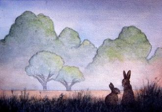
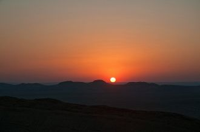
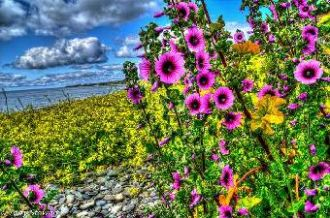
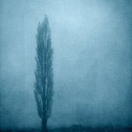
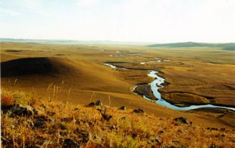
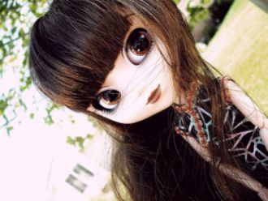
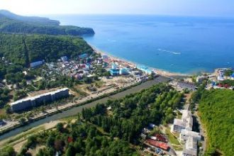
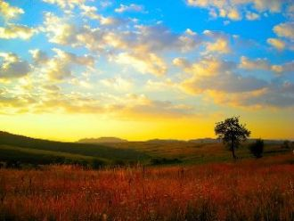

O wie schön ist deine Welt,Vater, wenn sie golden strahlet!Wenn dein Glanz herniederfälltUnd den Staub mit Schimmer malet,
O que você quer?O que você sabe?Não é fácil prá mimMeu fogo também me ardeÀs vezesMe vejo tão triste...
Raindrops are falling on my headAnd just like the guy whose feet areToo big for his bedNothin' seems to fit
Luz das estrelasLaço pro infinitoGosto tanto dela assimRosa amarelaVoz de todo gritoGosto tanto dela assim
Diz pra eu ficar muda faz cara de mistérioTira essa bermuda que eu quero você sérioTramas do sucesso mundo particular
Тёмными ночами кажется мне,Всё, о чем спрошу, узнаю во сне.Будет улыбаться в небе луна,Путь укажет мне она.Звёзды выше неба знают, где ты
Я думала, ты придёшь, Хотела в твои глаза ещё посмотреть тепло. Опять между нами дождь, и десять шагов назад.Куда это привело?
I saw youAgain, I knew just where you'd beI'll stop thisReal soon when you're back safe with me

She is like the lady down the roadOr just the woman up the street,Like any mother you may know.
Я иду, а звёзды катятся.Сколько дней из жизни тратится,Чтобы делать то, что не нравится,Даже не представить!
Я так люблю, когда ты рядом,Сердца едва коснёшься взглядом,И я далеко уже от дома,Я невесома!Куда-то лечу, сама не знаю,
Наша встреча повторилась, и вновь Говорили, как же сладка любовь,Что не нужно понимать в ней слова иногда!Если любишь, ни о чём не жалей,

Мысли. Песни.И никаких "если".Только вместе.И место - в секрете.Отвези меня туда,Где живут дельфины,Пижонят спинами
Запах кофе на губах,Мятые мысли и простыни.Всё читается в глазах,Друг для друга мы созданы.Попрошу у облаковЛетать над городом пониже,

В поле, возле речки, стоя на ветру,Одинокий тополь обронил листву.Листья облетевшие речка вдаль уносит.Поздняя, печальная на пороге осень.

Харах нудэнд минь оч гялалзахадХайрын толиноос чи минь мишээнэХонгор бусгуй чамайг хараадХорвоо бид хоёр хослон дуулна

No me arrepiento de este amorAunque me cueste el corazón;Amar es un milagro y yo te améComo nunca jamás lo imaginé.

Где плещутся волны устало, Трава утопает в росе,Где ветер гуляет по скалам,Есть город морской — Туапсе.

На небе много лучезарных звезд, но есть одна прекрасная.Солнышко наше красное, свети на радость нам, свети всегда (2 раза)
Осталось пять минут, мне пора уже идти.Курят и молчат мои друзья.Знаю, что поймут то, что ты должна прийтиНепременно проводить меня.